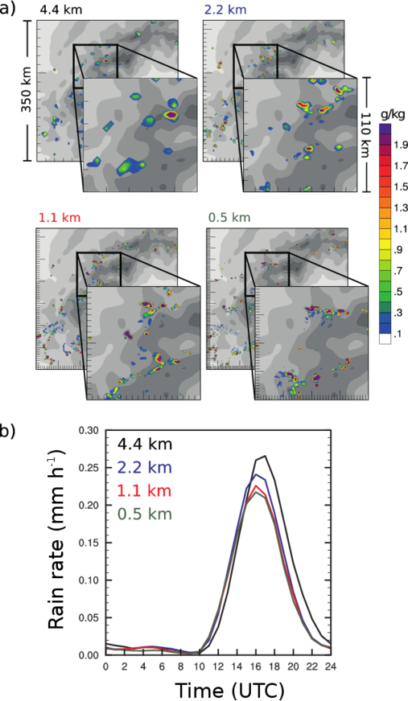

{kind=link}
The convergence behavior of a cloud resolving simulation across kilometer-scale grid spacings is illustrated. Panel (a) shows snapshots of the cloud liquid water content of clouds within a 350 km x 350 km large subdomain of the full modeling domain (located over the southwestern parts of the European Alps). The refinement of the grid spacing decreases the size of individual clouds and increases the number of convective clouds. Panel (b) shows the nine-day mean diurnal cycle of surface rain rate averaged over a larger domain covering the whole Alpine mountain range. The magnitude and timing of surface precipitation are largely insensitive to the horizontal grid spacing.
The explicit treatment of convection using models with grid spacings less than 4 km has led to considerable improvements of quantitative precipitation forecasts and climate simulations and provided remedy to issues that plagued convection-parameterizing models (CPMs) for too long. However, there is a continued quest for even finer grid spacings to resolve the energy spectrum of atmospheric motion across the kilometer scales. This study explores convergence characteristics of bulk heating and moistening rates related to an ensemble of deep convective clouds in real-case simulations in order to address resolution requirements in regional climate/weather simulations.